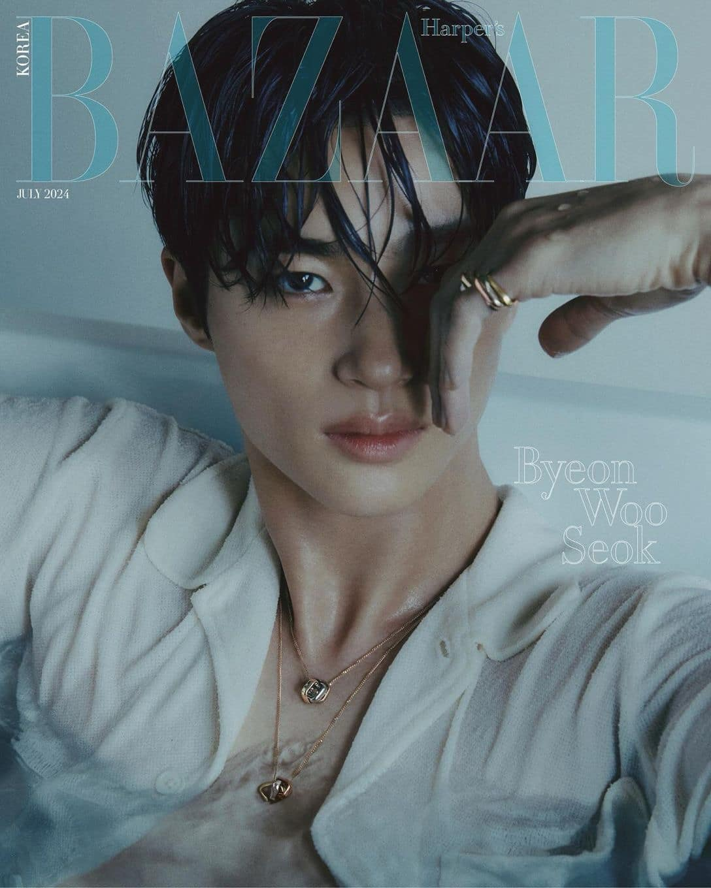

Birth Name: Byeon Woo Seok (변우석)
Birthday: October 31, 1991
Zodiac Sign: Scorpio
Height: 189 cm (6'2")
Weight: 73kg (160lbs)
MBTI Type: ESFJ-T
Instagram: @byeonwooseok
Weibo: byeonwooseok
Byeon Woo Seok Facts:
- He has an older sister.
- He studied at the Theater and Film Department.
- He starred in the "Sweet" by Lena Park Music Video (2014).
- He debuted as a model in the 2015 F/W Men's Fashion Show.
- In 2013, he worked as an administrative officer at the 37th Division's Public Affairs Office.
Fan Cafe: wooseok91
Agency Profile: BYEON WOO SEOK
Weverse: byeonwooseok
